The 19th Portuguese Tournament
of Mathematical GamesOn March 13, 2026, around 1850 students (aged 7 to 17) from all over Portugal joined in University of Aveiro to play six abstract games. The event was organized locally by Fábrica Centro Ciência Viva de Aveiro, and the Math Department of the University of Aveiro. More information here.
The event occurred at the University campus:
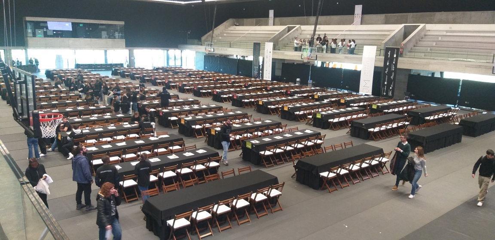
The tournament preparation
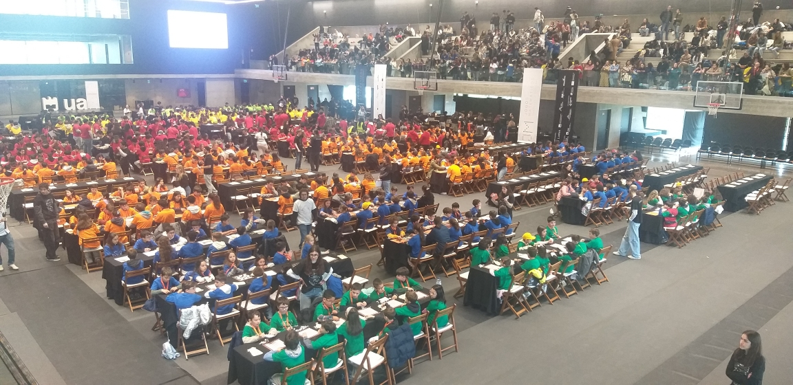
The tournament during the morningThe Portuguese Tournament of Mathematical Games started months before in several hundreds of schools, scattered thru all Portugal, with local tournaments to find what students were the best players.
The games were the following:
- Cats & Dogs - A 1970s game from Simon Norton
- Domineering, aka, Stop-Gate - invented by John Conway in the 1970s
- Quelhas - a misère stalemate game, designed by Alfie Davies and Carlos P. Santos
- Product - Nick Bentley's game with some adaptations
- Atari-Go - A variant of Go where the player that makes the first capture, wins.
- Nex - A variant of Hex using neutral pieces in the mix
The games were divided by students' age:
- First cycle (7-10 years) students played Cats & Dogs, Domineering or Quelhas
- Second Cycle (10-12 years) students played Domineering, Quelhas or Product
- Third Cycle (12-15 years) students played Quelhas, Product or Atari Go
- Secondary (15-17 years) students played Product, Atari Go or Nex
This meant 12 independent tournaments (a tournament per age per game). More information can be found at ludicum.org (in Portuguese).
Some pictures:
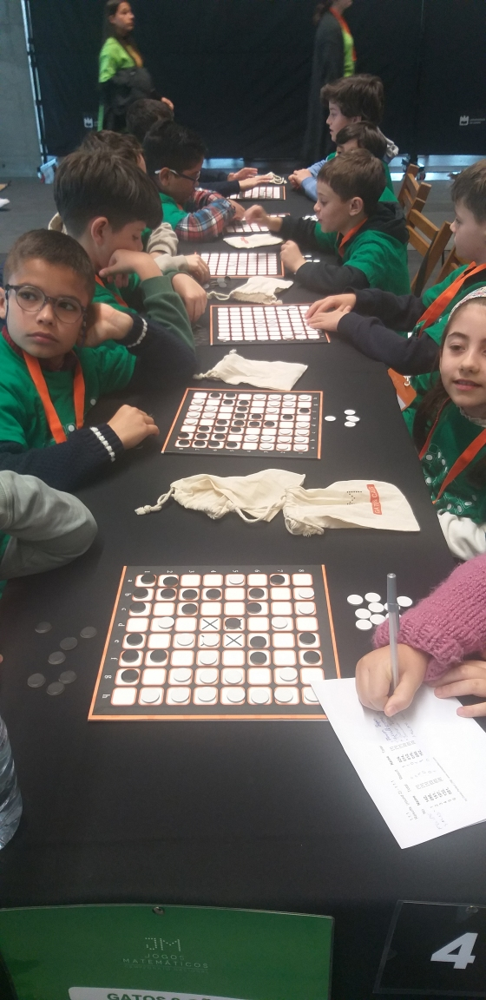
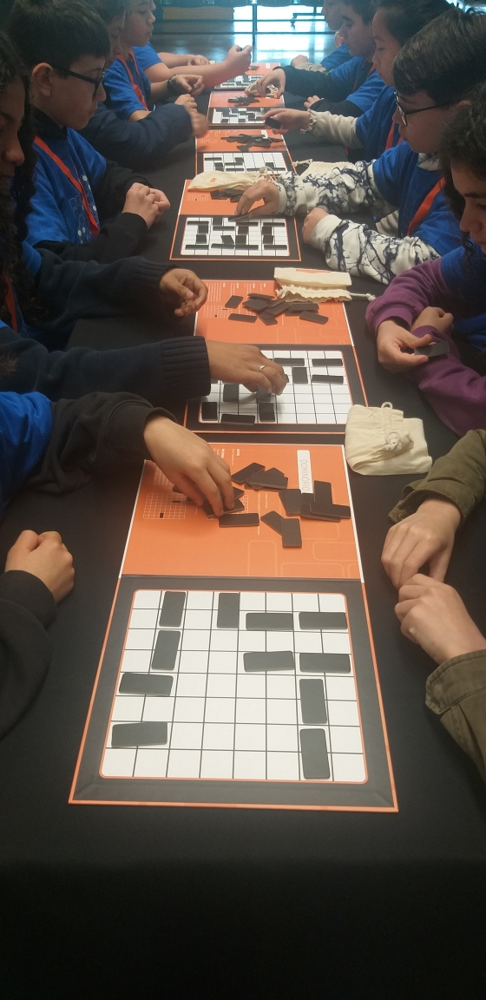
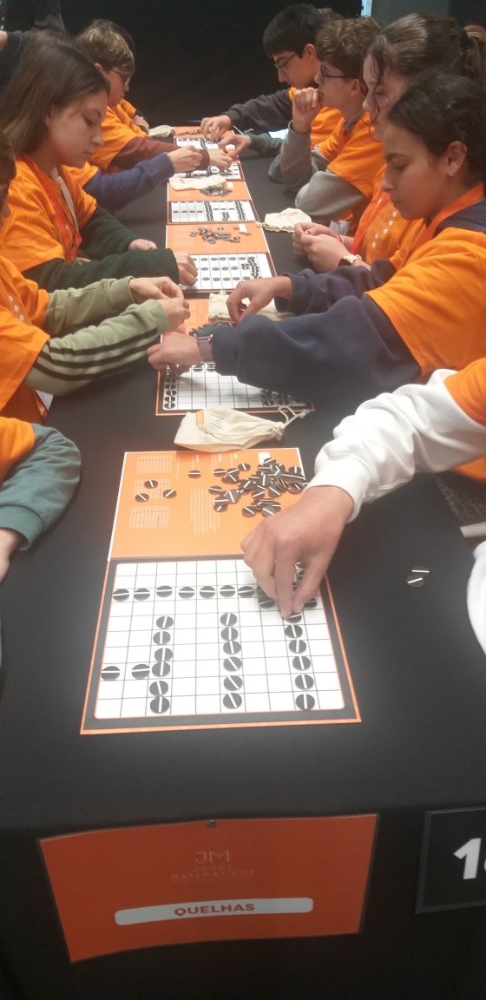
Cats and Dogs Domineering Quelhas
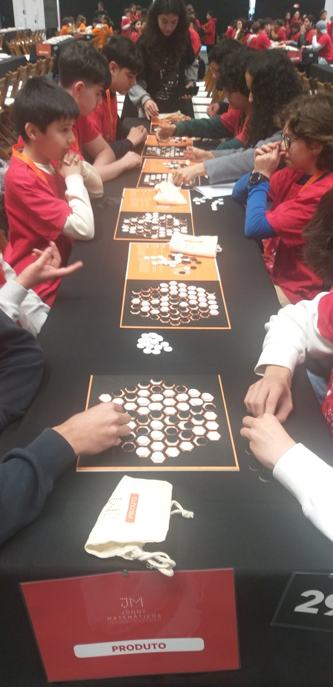
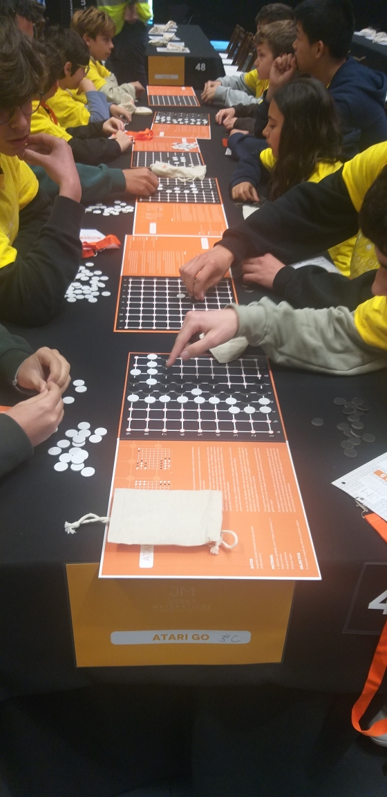
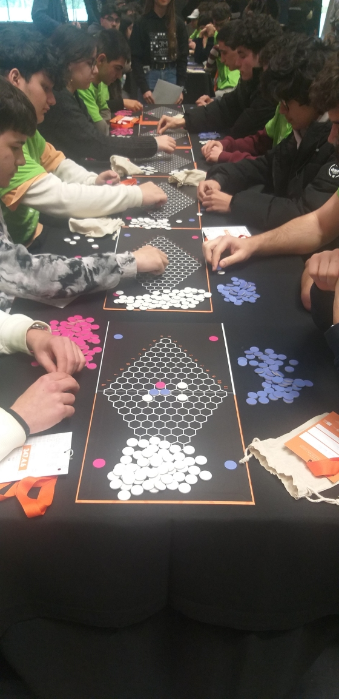
Product Atari-Go Nex
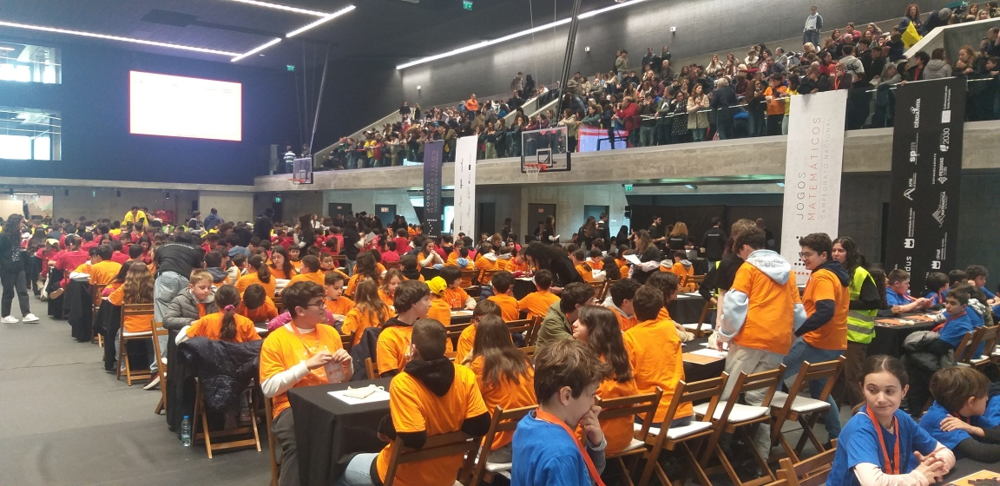
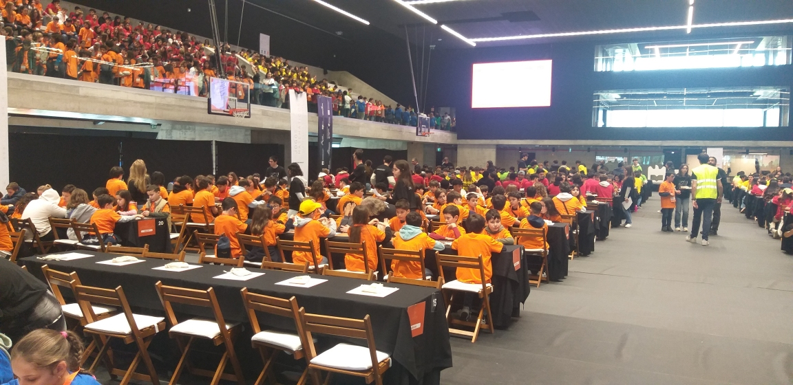
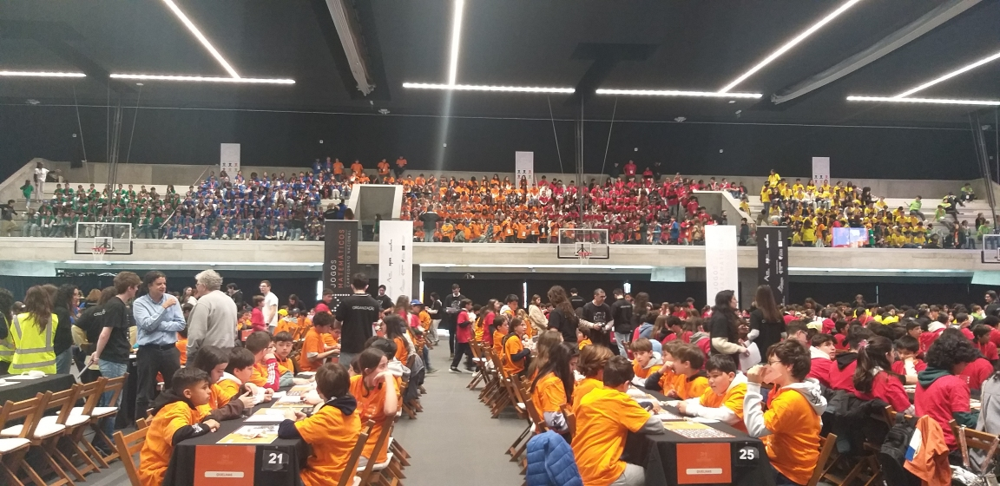
During the tournament (sorry for the low quality)The best student of each tournament was selected to the afternoon's final. This last tournament decided the national winners.
The winners
1º Ciclo Gatos e Cães 1 Afonso Osório -- Colégio de S. João de Brito 2 Duarte Andrade -- EB do B.º da Câmara 3 Afonso Ferreira -- EB Prof. António Melo Machado, Arcos de Valdevez 1º Ciclo Dominório 1 Artem Svystunov -- EB1|PE|C de Santa Cruz 2 Enzo Rocha -- EB da Sé 3 Rodrigo Guerreiro -- Colégio de S. João de Brito 1º Ciclo Quelhas 1 Sofia Aleixo -- EB|PE Bartolomeu Perestrelo 2 Guilherme Pinto -- EB Eira do Penedo – Soajo, Arcos de Valdevez 3 Luka Rebelo -- EB da Rebelva 2º Ciclo Dominório 1 Diogo Pala -- EB de Matosinhos 2 Francisco Brito -- EB 2,3/S de Arcos de Valdevez 3 Mikka Wassormann -- EB Pedro Nunes de Alcácer do Sal 2º Ciclo Quelhas 1 Leonardo Neves -- EB2|3 do Caniço 2 Luca Angel -- Colégio de Santa Maria 3 Clara Montes -- Colégio Helen Keller 2º Ciclo Produto 1 Klaus Izidoro -- EB D. Dinis, Leiria 2 Joaquim Pereira -- EB André de Resende 3 Gabriel Cordeiro -- Colégio Teresiano de Braga 3º Ciclo Quelhas 1 Vitor Ferreira -- EB2|3 do Caniço 2 Martim Oliveira -- ES da Lixa 3 Yasmim Santos -- EB Jacinto Correia 3º Ciclo Produto 1 Henrique Caturra -- EB Ferreira de Castro 2 João Gonçalves -- Colégio de Santa Doroteia 3 Xavier Anes -- Colégio de S. João de Brito 3º Ciclo Atari-Go 1 Guilherme Pereira -- Colégio de S. João de Brito 2 Tiago Figueira -- EBS|PE|C D. Lucinda Andrade 3 João Cruz -- EB e Sec. À Beira Douro Secundário Produto 1 Salvador Henriques -- Colégio de S. João de Brito 2 Valeryi Barbalat -- ES Infanta D. Maria 3 Marcos Nascimento -- ES de Mem Martins Secundário Atari-Go 1 Rafael Cruz -- ES de Oliveira do Hospital 2 Mateus Garanito -- EBS Padre Manuel Álvares - polo da Ribeira Brava 3 Fabio Carvalho -- ES Ferreira Dias Secundário Nex 1 Stanislav Beliqiev -- ES Sebastião da Gama 2 Guilherme Maiato -- ES Leal da Câmara 3 Leandro Moura -- EB e Sec. de Murça Inventa o Teu Jogo ('Create Your Game', a board game design contest)
The winner of the best board game design was Afonso Oliveira with his game O Poço (The Well).
Acknowledgments
We wish to thank all the organizations that made this possible and also the wonderful people that work really hard to make this possible. Also to: Alda Carvalho, Jorge Nuno Silva, Luís Malheiro, Pedro Pombo, Isabel Correia, Miguel Cardoso, Carmen Marques, Jorge Costa, Sofia Simões, Cíntia Alves, Marta Condesso, Paulo Tavares, Regina Sousa, Nuno Gomes, Paulo Nunes, Carolina Magalhães, João Pedro Neto, and all the great professors and assistants that volunteer to help us with this wonderful event. A special thanks to Carlota Brazileiro for her tireless work helping low-vision and blind students playing these great games!
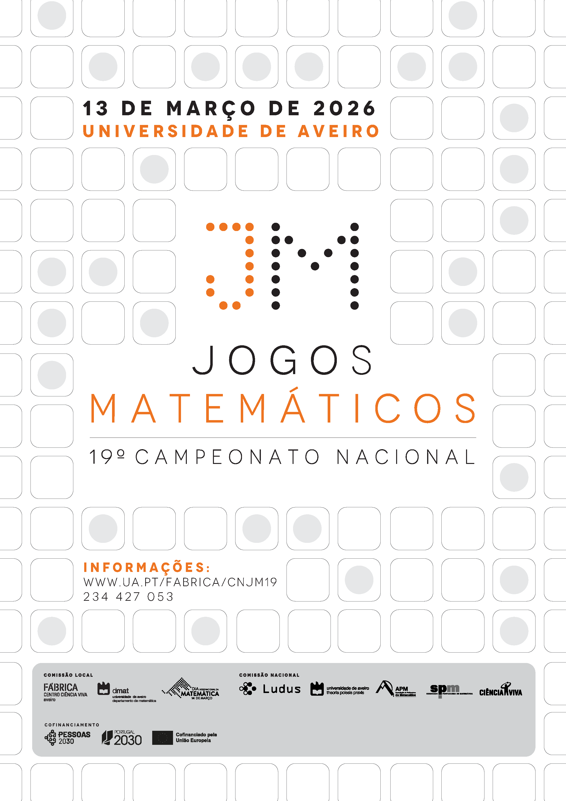